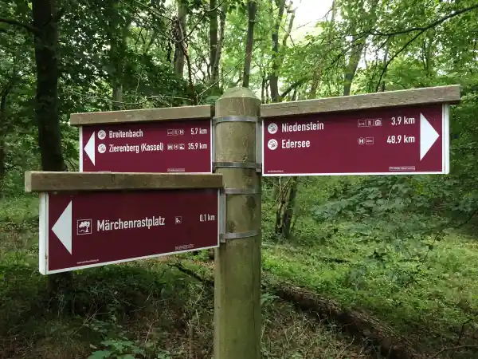
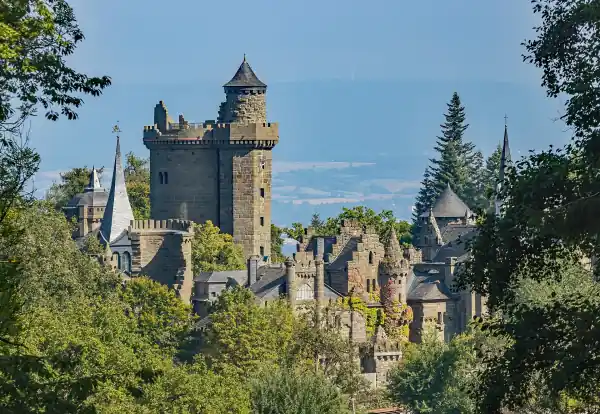

Start / Kletterwald
Aaron Schiele
geprüft am
geprüft am
Wie läuft ein Besuch im Kletterwald ab?
Zuerst gibt es eine Einweisung von 30 bis 45 Minuten, danach hast du zwei Stunden zum Klettern, zusammen also 2,5 bis 3 Stunden. Gurt, Helm und Handschuhe bekommst du gestellt, eigene Klettergurte sind nicht erlaubt. Wer länger bleiben will, zahlt 5 Euro je angefangene halbe Stunde.
Auf 20.000 Quadratmetern warten 10 Parcours mit über 100 Übungen in fünf Farben:
| Farbe | Schwierigkeit | Höhe |
|---|---|---|
| Grün | leicht, für die Jüngsten | 2 bis 9 m |
| Gelb | leicht bis mittel | 4 bis 10 m |
| Blau | mittelschwer, mit Teamparcours für zwei | 5 bis 11 m |
| Rot | schwer | 7 bis 15 m |
| Schwarz | sehr schwer | 8 bis 10 m |
Welche Farbe ab welchem Alter erlaubt ist, steht vor jedem Parcours auf einem Schild. Fang ruhig eine Stufe leichter an als gedacht: Die Arme merken schnell, dass Klettern Arbeit ist.
Ab welchem Alter dürfen Kinder klettern?
Ab 4 Jahren und einem Meter Körpergröße. Die Jüngsten klettern nur auf den grünen Parcours und nur mit einem Erwachsenen, der mitklettert, höchstens zwei Kinder je Erwachsenem. Ab 6 Jahren dürfen Kinder allein klettern, wenn eine Begleitperson vom Boden aus aufpasst. Ab 14 Jahren geht es ohne Erwachsene, mit Online-Reservierung durch die Eltern und schriftlicher Einverständniserklärung. Die Trainer klettern nicht mit, die Aufsicht bleibt bei dir.
Was kostet der Kletterwald Kassel?
| Alter | Preis | ermäßigt |
|---|---|---|
| Kinder 4 bis 5 Jahre | 19 Euro | 17 Euro |
| Kinder 6 bis 11 Jahre | 24 Euro | 22 Euro |
| Jugendliche 12 bis 17 Jahre | 26 Euro | 24 Euro |
| Erwachsene ab 18 Jahren | 28 Euro | 26 Euro |
Für ein Kind von 4 bis 5 Jahren mit einem Erwachsenen gibt es das Familienticket für zwei zu 38 Euro. Zuschauer zahlen nichts. Ermäßigung bekommen unter anderem Gruppen ab 10 Personen, Studierende, Menschen ab 60 Jahren und Inhaber der KasselCard. Am liebsten wird mit Karte bezahlt, bar geht auch.
Wann hat der Kletterwald geöffnet?
Die Saison 2026 lief vom 4. April bis 1. November; geöffnet ist in der Saison samstags, sonntags, an Feiertagen und Brückentagen, in den hessischen Schulferien täglich. Feste Uhrzeiten nennt der Betreiber nicht, du buchst ein Zeitfenster auf der Reservierungsseite. Zeigt sie keine Termine, ist der Park zu oder ausgebucht. Die Saison 2027 ist noch nicht angekündigt.
Regen allein ist kein Grund abzusagen, der Park bleibt offen. Bei Unwetter wird pausiert und deine Kletterzeit verschiebt sich.
Wie komme ich zum Kletterwald?

Der Kletterwald liegt am Hohen Gras im Habichtswald, mit fast 615 Metern dem höchsten Punkt im Naturpark. Direkt daneben sind kostenlose Parkplätze.
- Mit dem Bus: Der Bus 22 fährt von der Tram-Endhaltestelle Druseltal über den Herkules zur Haltestelle Hohes Gras. Nicht jede Fahrt hält dort, einzelne fahren als Anrufsammeltaxi, das du bis 15 Minuten vorher unter 0800-939-0800 bestellst.
- Zu Fuß vom Herkules: rund 3,4 Kilometer, etwa 48 Minuten auf der Wanderroute über den Roten Stollen. Damit lässt sich der Kletterwald gut mit einem Besuch am Herkules verbinden, mehr Touren stehen unter Wandern im Habichtswald.
Was gibt es am Hohen Gras sonst?
Nach dem Klettern lohnt die Waldgaststätte Hohes Gras, außer montags von 11 bis 18 Uhr geöffnet; im Winter können die Zeiten abweichen, schau dann vorher nach. Neben ihr steht ein Aussichtsturm. Am Kletterwald selbst gibt es nur einen Kiosk mit Getränken und Riegeln. Picknick ist erlaubt, Tische stehen bereit, Grillen ist verboten.
Häufige Fragen
Ab wie viel Jahren darf man in den Kletterwald Kassel?
Ab 4 Jahren und mindestens einem Meter Größe, dann aber nur auf den grünen Parcours mit einem Erwachsenen, der mitklettert. Allein klettern Kinder ab 6 Jahren, wenn eine Begleitperson vom Boden aus aufpasst.
Muss ich im Kletterwald Kassel reservieren?
Ja, eine Online-Reservierung ist Pflicht. Bezahlt wird erst vor Ort, mit Karte oder bar.
Wie lange dauert ein Besuch im Kletterwald?
Rechne mit 2,5 bis 3 Stunden: 30 bis 45 Minuten Einweisung, danach zwei Stunden Klettern.
Was ziehe ich zum Klettern an?
Feste, geschlossene Schuhe sind Pflicht, Sandalen und Flip-Flops gehen nicht. Umkleiden gibt es keine, komm also gleich in bequemer Kleidung.
Findet der Kletterwald auch bei Regen statt?
Ja, bei Regen bleibt der Park geöffnet. Nur bei Unwetter wird unterbrochen, die Kletterzeit verschiebt sich dann.
Gibt es eine Ermäßigung mit der KasselCard?
Ja, mit der KasselCard zahlst du den ermäßigten Preis, als Erwachsener also 26 statt 28 Euro.
Wo parke ich am Kletterwald Kassel?
Direkt am Kletterwald, die Parkplätze dort sind kostenlos.
Quellen abgerufen am 20.10.2026
- Kletterwald Kassel Preise · Öffnungszeiten · Häufige Fragen · Parcours · Reservierung · Anfahrt
- Visit Kassel Hohes Gras · Waldgaststätte Hohes Gras
- Naturpark Habichtswald Wanderparkplatz Hohes Gras
- KVG Fahrplan Bus 22 (2026)
- OpenStreetMap-Routing Fußwege
Weiterlesen

Habichtswaldsteig
Wandern im Habichtswald ab dem Bergpark Wilhelmshöhe: vier Rundtouren von 2 bis 18 Kilometern mit Start, Markierung und Rückweg per Bus 22 und Tram 4.
Weiterlesen
Kassel mit Kindern
Kassel mit Kindern: Bergpark und Löwenburg, Grimmwelt, Naturkundemuseum, Planetarium und Karlsaue mit Öffnungszeiten und Kinderpreisen im Überblick.
Weiterlesen
Herkules Kassel
Herkules Kassel: Was das Monument ist, wann Oktogon und Plattform offen sind, was der Eintritt kostet und wie du mit Bus oder Auto hinaufkommst.
Weiterlesen